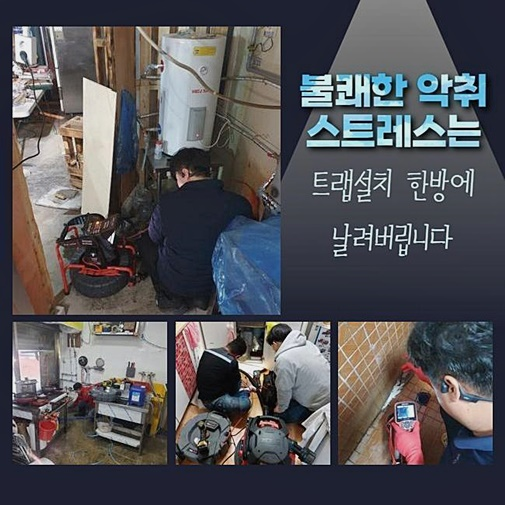
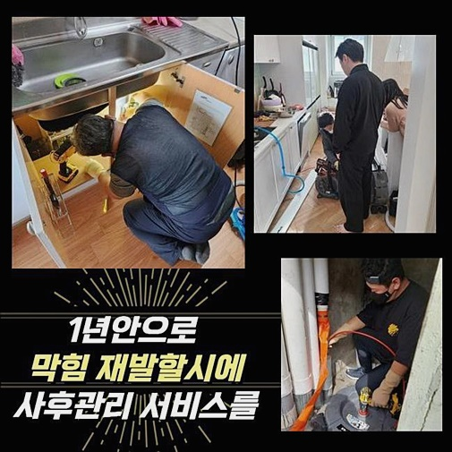
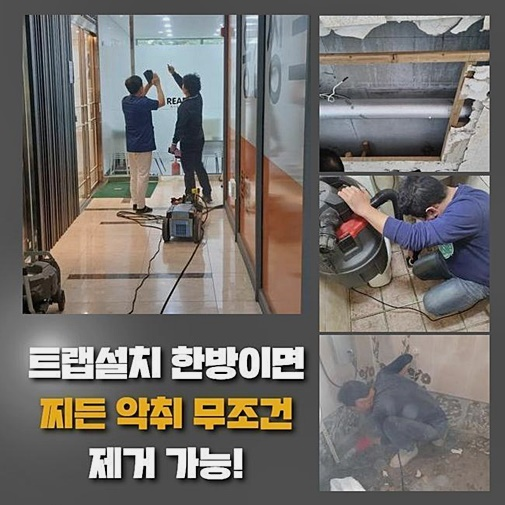
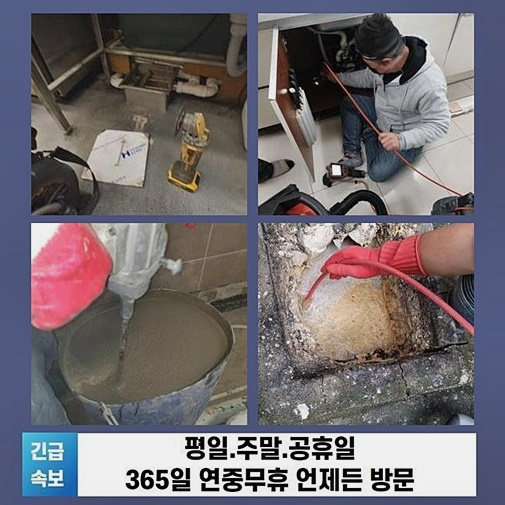
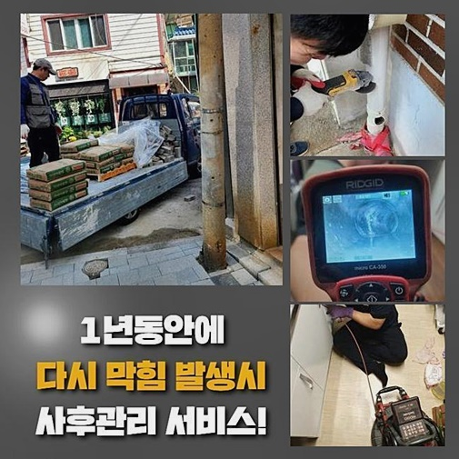
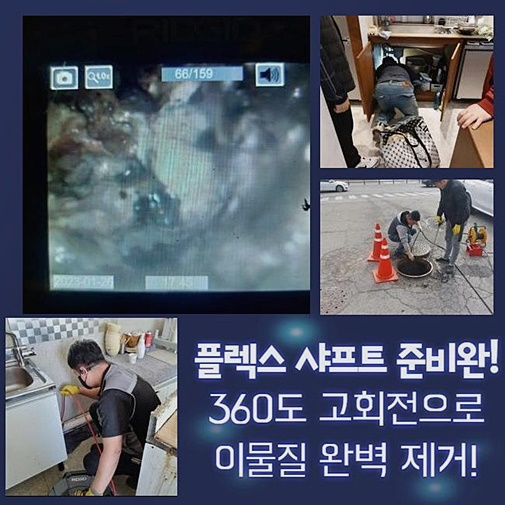
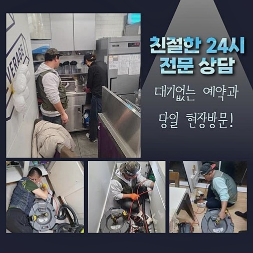

🏠 연수구 선학동씽크대막힘 청학동 냄새차단 누수공사
용인시 처인구 배관막힘 전문 시공 후기

📋 작업 개요
- 위치: 용인시 처인구, 수원시 영통구, 화성시 동탄
- 서비스 유형: 배관막힘, 누수수리, 고압세척, 내시경점검
- 작업 일시:
- 업체명: 하수구수사대 (010-5615-2118)
🔍 문제 상황
연수구 선학동씽크대막힘 청학동 냄새차단 누수공사
건물의 크기와 관계없이 물들이 이용되고 있을 경우 배수관련 문제는 불현듯 발생할 확률들이 있습니다
막혀버리는 사태가 발발하는 기조는 하수도 안에 자리잡은 슬러지들을 빼놓을 수 없죠
수도가 빠지거나 시공들을 진행할때 하수라인으로 잔해가 계속적으로 흘러가는 상태들이 나타나기에 주기적으로 청소들을 그때그때 안할 시엔 증상이 대외적으로 불거지게 될 것입니다
다양한 피해가 발생될 때 배출되는 유속이 단순히 관찰해도 느려지게 되며 기본적 생활양식에도 애로사항을 마주하게 되고 시설들을 쓸 시에도 악영향을 야기시킬 가능성들이 상당합니다
상업용도로 입점한 뒤 직접적으로 판매를 영위하신다면 금액적인 손해가 불거지게되니 신경쓰는것이 있어야한다고 생각되어집니다
앞으로 저희업체가 배관청소를 이어간 주차장공간의 장소를 보며 심상치않은 물빠짐은 무슨 방식을 통해 바로 잡아야되는게 합리적인것인지 간단히 정보를 제공하는 시간들을 가져볼게요
하수도로 잔해가 흐르지않게 주시해주신다면 물빠짐 불가 상태는 큰 어려움없이 예방가능해요

🔎 원인 분석
💡 전문가 진단: 정밀 진단 장비를 사용하여 슬러지의 고착 여부를 판명하고 타격/세척 작업을 실시했습니다.
이것들 중에 고객님께서는 사용공간의 하수구의 넓이등을 파악해보고 측정하신 값들에 동일한 크기들의 여과망까지 놔두는것이에요
여과망까지 준비해주면 잔해물이 쌓이게되는 것은 일정수준 예방시키는 역할로 빛을 발하고 통수오류 상황으로 불거지는 불상사를 최소화할 수 있죠
제품의 여과망까지 마련하거나 주기성을 가지고 관리했으나 예상치못한 문제들이 발발했을 시엔 한시라도 빨리 전문가와 컨택해 하수도 안에 침전된 오염물을 없애줘야해요
이와달리 문제들을 인지하였지만 심각한 불편들을 안주겠다고 알고계시고 청소를 안하시는 고객분들이 대다수라고 할수있겠고 금일에도 간소한 상황으로 시작하여 역류증상을 목격하고서야 마침내 진단을 해주길 바라셨습니다
현장을 보고 가용가능한 장치가 차이를 보이기에 저희 전문진은 원만한 해결을 위하여 저희들이 준비한 장치를 챙긴 뒤 방문드립니다
도착하고서 첫번째로 문제를 보이는 공간의 점검을 이행합니다
레버를 올린 뒤 하수도로 나가는 속력들을 점검하는 과정들로 확인하니 배출되는 유속이 증상들이 될 정도로 느려졌고 배수관에서 자리한 잔해가 역류하는 모습도 보게되었습니다
역류마저 동반되었을 경우 공용하수도에 잔해가 집중되어 누적되있을 여지가 크고 이물질들을 없애주려면 내시경을 사용하여 증상의 부위를 재빨리 인지하는것이 중요합니다

🔧 작업 과정
내시경기기는 문제의 시발점을 체크할 수 있고 구조적인 특수성도 파악가능하므로 원만하게 진행하게끔 도움들을 제공하는 도구라 알고계시면 된답니다
예사로운 과정으로 여겨질 수 있겠지만 없어선안될 작업이기때문에 전문진께 도움요청 시 내시경장치를 통해 검수과정을 수행하는지 유무를 꼼꼼히 체크해보는걸 권장드려요
마침내 진단을 실시했더니 추측한 바와 같이 공동배수관에서부터 특정한 위치 뿐만아니라 흡착된 이물과 슬러지가 누적된것을 보았어요
오래도록 세척이 이뤄지지 못했으므로 스케일링 장치를 사용하여 청소를 수행하는것 보단 고압청소를 진행해 거시적인 청소가 수행되어야 했죠
고압수청소는 대체로 비용들이 야기되는 것은 사실이겠으나 증상들이 생겨나는 그때그때 업체의뢰를 통하여 계속해서 비용을 지불하는것보단 좋은 과정이라 볼 수 있어요
배수관 사이즈와 가용가능한 노즐들을 정하여 세척 시공을 수행하면 하수관을 깨끗했던 시점과 동일하게 청소시키는 마법을 경험할 수 있죠
세척 청소를 해줄땐 무조건 압력들을 쏴주기보다는 부위마다 압력들을 조정시켜야됩니다
배수관은 각기 다른 내구성들로 자리잡고 있어서 무분별하게 시공을 강행한다면 손상들을 발생할 여지가 높아요
저희의 전문가는 그간의 경험들을 가지고있기에 해당 내용을 원만하게 숙지하고 있으며, 본격적인 시공을 하기이전 방문한 곳의 특징을 올바르게 파악하고 조심히 세척들을 실시합니다
세척 시공을 해주는 시점에서 내부에 있던 잔해물이 흐를 확률이 농후하여 비닐등을 통해 주위를 보호한 후에 고쳐내는게 좋으며,
오늘처럼 천장라인에 공용배관들이 설치되어 있으면 연결구를 탐색하는것보단 특정 포인트를 특정하여 타공작업 후 노즐들을 삽입시키는게 납득가능한 방법이라고 판단되죠
배관청소가 종료되었으면 타공지점을 깔끔히 마감하고 배출된 이물은 별도로 담고서 청결하게 정리하니 우려하지 않으실 수 있습니다


✅ 작업 완료
하수구 증세가 야기되어 작업의 시점을 보내버린다면 알게모르게 증상들이 확대되며 전체적인 시스템에 피해만 늘어나는 결과를 초래합니다
혹여 하수관이나 배수구를 쓰는 과정속에서 무겁지않더라도 하수구증상이 야기된것을 보신 경우라면 재빨리 전문진의 도움들을 받아야 하는데요
막힘 관련 사항을 안정적이고 신속히 바로 잡는 전문적인 업체들을 찾고 있다면 주저없이 저희들과 헤쳐나가봅시다!
전문적 장치와 기술들을 바탕해서 고객의 고충을 서둘러 해소할 방식을 제시할것을 여러분들께 말씀드리니 질문이 있다거나 의뢰가 요구된다면 언제라도 저희께 전화주시면 됩니다!




⚠️ 하수구 배관 막힘 예방 및 관리 가이드
- ✅ 머리카락, 비닐, 물티슈 등 물에 분해되지 않는 이물질은 절대 흘려보내지 마세요.
- ✅ 기름기 많은 식기는 설거지 전 키친타올로 먼저 기름때를 닦아내세요.
- ✅ 주기적으로 배수구에 뜨거운 물을 가득 부어주어 유지방 고착을 방지하세요.
- ✅ 작업 후 1년 이내 재발 시 무상 A/S 보증 서비스를 제공합니다.
💡 핵심 정리
- 확실한 장비 작업(내시경 점검 및 샤프트 스케일링)으로 원인을 뿌리 뽑습니다.
- 작업 후 1년 이내에 동일한 부위 재발 시 100% 무상 A/S 서비스를 보장합니다.
- 서울 · 경기 · 인천 전 지역에 24시간 언제든 긴급 출동할 수 있도록 항시 대기 중입니다.
❓ 자주 묻는 질문 (FAQ)
🚨 용인시 처인구 배관막힘 문제로 고민이신가요?
정확한 원인 진단과 확실한 시공으로 재발 없는 해결을 약속드립니다.
24시간 긴급 출동 | 서울 · 경기 · 인천 전지역 | 1년 내 재발 시 무상 A/S